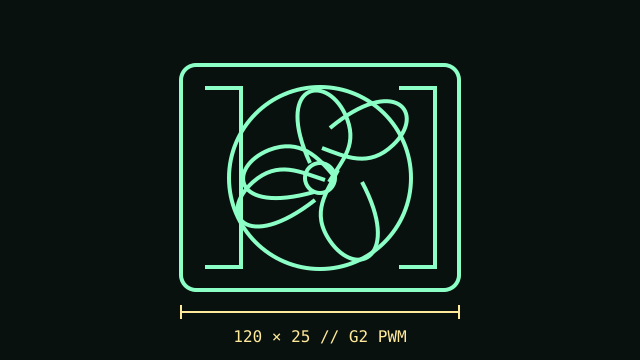

[ IDENTIFIED MODEL // NF-A12x25 G2 PWM ]
Noctua NF-A12x25 G2 PWM
Second-generation 120 mm fan in the A12x25 G2 family. The first-generation NF-A12x25 PWM has different model identification and specifications.

Exact model: NF-A12x25 G2 PWM, standard single fan. Do not apply this record to LS-PWM, chromax.black, or Sx2-PP sets.
Specifications
| Frame | 120 × 120 × 25 mm |
|---|---|
| Speed / airflow / pressure / noise | 360–1800 RPM; up to 107.3 m³/h (63.15 CFM); 3.14 mm H₂O; 22.5 dB(A). |
| Bearing | SSO2 bearing |
| Connector / control | 4-pin fan connector; PWM speed control. |
| Electrical | 12 V DC rated; maximum input current 0.15 A. |
| Fit and host compatibility | Standard 120 mm case/radiator footprint and 25 mm depth; check the full mounting pattern, screw depth, nearby fittings, fan header budget, and airflow direction for the specific enclosure or radiator. |
Installation
Use a PWM-capable 4-pin header/controller and observe its per-header current rating. Verify that the 25 mm fan body and attached cable clear the radiator, case, and adjacent hardware.
Manufacturer sources
- Noctua — NF-A12x25 G2 PWM product pageExact G2 PWM model identity and product information.
- Noctua — NF-A12x25 G2 PWM specificationsModel-specific dimensions, performance, electrical data, bearing, and connector.